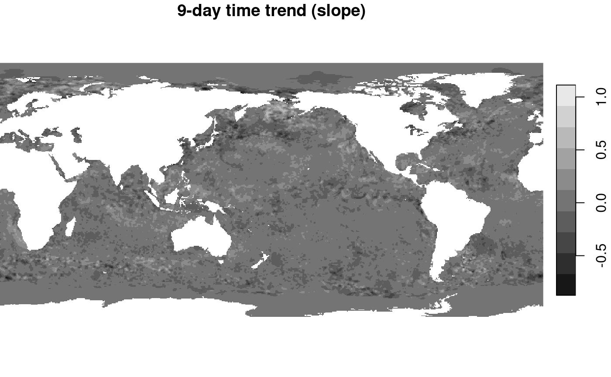

We will first fix the random number seed, to get identical results for procedures that involve random sampling. Remove this command if you want the random effect in outcomes.
set.seed(131)Training and prediction with stars objects
The usual way of statistical modelling in R uses
data.frames (or tibbles), and proceeds like
m = model(formula, data)
pr = predict(m, newdata)where model is a function like lm,
glm, randomForest etc. that returns a classed
object, such that the predict generic can choose the right
prediction function based on that class. formula looks like
y ~ x1+x2 and specifies the dependent variable
(y) and predictors (x1, x2),
which are found as columns in data. newdata
needs to have the predictors in its columns, and returns the predicted
values for y at these values for predictors.
stars objects as data.frames
The analogy of stars objects to data.frame is this:
- each attribute (array) becomes a single column
- dimensions become added (index) columns
To see how this works with the 6-band example dataset, consider this:
library(stars)
## Loading required package: abind
## Loading required package: sf
## Linking to GEOS 3.10.2, GDAL 3.4.1, PROJ 8.2.1; sf_use_s2() is TRUE
l7 = system.file("tif/L7_ETMs.tif", package = "stars") %>%
read_stars()
l7
## stars object with 3 dimensions and 1 attribute
## attribute(s):
## Min. 1st Qu. Median Mean 3rd Qu. Max.
## L7_ETMs.tif 1 54 69 68.91242 86 255
## dimension(s):
## from to offset delta refsys point x/y
## x 1 349 288776 28.5 SIRGAS 2000 / UTM zone 25S FALSE [x]
## y 1 352 9120761 -28.5 SIRGAS 2000 / UTM zone 25S FALSE [y]
## band 1 6 NA NA NA NA
as.data.frame(l7) %>% head()
## x y band L7_ETMs.tif
## 1 288790.5 9120747 1 69
## 2 288819.0 9120747 1 69
## 3 288847.5 9120747 1 63
## 4 288876.0 9120747 1 60
## 5 288904.5 9120747 1 61
## 6 288933.0 9120747 1 61We see that we get one single variable with the
object (array) name, and added columns with the dimension values (x, y,
band). In a typical case, we would like to have the six bands
distributed over six variables, and have a single observation (row) for
each x/y pair. For this, we could use
e.g. utils::unstack or dplyr::pivot_wider on
this data.frame, but a more efficient way is to use the dedicated
split method for stars objects, which resolves
a dimension and splits it over attributes, one for each dimension
value:
l7 %>% split("band") %>%
as.data.frame() %>%
head()
## x y X1 X2 X3 X4 X5 X6
## 1 288790.5 9120747 69 56 46 79 86 46
## 2 288819.0 9120747 69 57 49 75 88 49
## 3 288847.5 9120747 63 52 45 66 75 41
## 4 288876.0 9120747 60 45 35 66 69 38
## 5 288904.5 9120747 61 52 44 76 92 60
## 6 288933.0 9120747 61 50 37 78 74 38The reason that split is more efficient than the
mentioned alternatives is that (i) split does not have to
match records based on dimensions (x/y), and (ii) it works for
out-of-memory (stars_proxy) arrays, in the chunked process/write loop of
write_stars(). ### Predict for stars
objects
The pattern to obtain predictions for all pixels of a
stars objects is:
- use the full dataset or a sample of it to train the model, using
as.data.frame()(possibly after asplit) - use
predict(star_object, model)to predict for all pixels ofstars_object, using the stars-wrapper of thepredictmethod formodel. - if there is no
predictmethod formodel, provide one (see thekmeansexample below)
This works both for stars objects (in-memory) as
stars_proxy objects (out-of memory). For plotting
stars_proxy objects, downsampling is done before
prediction (predicting only the pixels that are shown), full rasters can
be written to disk with write_stars(), which will carry out
predictions on chunks being read and written.
models fitted for every pixel
We can run models in many different ways on array data. One way is to run a single model to all pixels, where the model operates e.g. on the spectral (band) or temporal dimension. An example was given in vignette 2, where NDVI was computed from the red and near infrared band. NDVI does not involve estimating parameters, but reducing two bands to one.
An example where we fit a model to every pixel would be fit a time series model to each pixel time series, and output one or more model coefficients for each pixel; this is shown next.
Linear regression on pixel time series
We can read in the avhrr dataset, containing only 9 days:
library(stars)
x = c("avhrr-only-v2.19810901.nc",
"avhrr-only-v2.19810902.nc",
"avhrr-only-v2.19810903.nc",
"avhrr-only-v2.19810904.nc",
"avhrr-only-v2.19810905.nc",
"avhrr-only-v2.19810906.nc",
"avhrr-only-v2.19810907.nc",
"avhrr-only-v2.19810908.nc",
"avhrr-only-v2.19810909.nc")
file_list = system.file(paste0("netcdf/", x), package = "starsdata")
y = read_stars(file_list, sub = "sst", quiet = TRUE, proxy = TRUE)
(t = st_get_dimension_values(y, 4))
## [1] "1981-09-01 UTC" "1981-09-02 UTC" "1981-09-03 UTC" "1981-09-04 UTC"
## [5] "1981-09-05 UTC" "1981-09-06 UTC" "1981-09-07 UTC" "1981-09-08 UTC"
## [9] "1981-09-09 UTC"We will use a function that computes the slope of the regression line
for temperature with time. We get temperatures as a vector in the first
argument of the function supplied to st_apply, and have
t already defined. The function could look like
but we will optimize this a bit, using anyNA and
lm.fit rather than lm:
The result is lazily defined by (adrop drops the
singular dimension)
but only computed by the following command, where the computations are restricted to the pixels plotted:
plot(out, breaks = "equal", main = "9-day time trend (slope)")
## downsample set to 1
An interisting pattern appears (despite the very short time series!): where SST reveals a main signal of colder when getting further from the equator, changes in SST show much more fine grained structures of areas going up, and others going down. A diverging color ramp would be a better choice here, to distinguis positive from negative trends.
Unsupervised learners
Principal components
In the first example, we build principal components on the entire data set, because it is rather small.
tif = system.file("tif/L7_ETMs.tif", package = "stars")
r = split(read_stars(tif))
pc = prcomp(as.data.frame(r)[,-(1:2)]) # based on all data
out = predict(r, pc)
plot(merge(out), breaks = "equal", join_zlim = FALSE)
We see, amongst others, that PC1 picks up the difference between sea (dark) and land, and PC2 and 3 structures in sea and coastal waters.
In the second example, we build principal components from a sample of
the entire data set, because the entire dataset is rather large. We
apply it, using predict, to pixels shown in the plot
(i.e. at reduced rather than full resolution)
granule = system.file("sentinel/S2A_MSIL1C_20180220T105051_N0206_R051_T32ULE_20180221T134037.zip",
package = "starsdata")
s2 = paste0("SENTINEL2_L1C:/vsizip/", granule,
"/S2A_MSIL1C_20180220T105051_N0206_R051_T32ULE_20180221T134037.SAFE/MTD_MSIL1C.xml:10m:EPSG_32632")
p = read_stars(s2, proxy = TRUE, NA_value = 0) %>%
split()
r = st_sample(p, 1000)
pc = prcomp(na.omit(as.data.frame(r))[,-(1:2)]) # based on all data
out = predict(p, pc)Before plotting this, we’ll add country borders that delineate sea,
obtained from the mapdata package:
bb = st_bbox(p) %>%
st_as_sfc() %>%
st_transform(4326) %>%
st_bbox()
library(maps)
library(mapdata)
m = map("worldHires", xlim = bb[c(1,3)], ylim = bb[c(2,4)], plot=F,fill=TRUE) %>%
st_as_sfc() %>%
st_transform(st_crs(r))We plot the results with independent color ranges, so every PC is stretched over the entire grey scale.
plt_boundary = function() plot(m, border = 'orange', add = TRUE)
plot(merge(out), hook = plt_boundary, join_zlim = FALSE)
## downsample set to 18
This suggests that PC1 picks up the difference cloud signal (difference between clouds and non-clouds), PC2 the difference between sea and land areas, and PC4 some sensor artefacts (striping in swath direction).
To compute full resolution (10000 x 10000 pixels) results and write them to a file, use
write_stars(merge(out), "out.tif")K-means clustering
library(clue)
predict.kmeans = function(object, newdata, ...) {
unclass(clue::cl_predict(object, newdata[, -c(1:2)], ...))
}For a small dataset:
tif = system.file("tif/L7_ETMs.tif", package = "stars")
i = read_stars(tif, proxy = TRUE) %>%
split()
nclus = 5
sam = st_sample(i, 1000)
k = kmeans(na.omit(as.data.frame(sam)[, -c(1:2)]), nclus)
out = predict(i, k)
plot(out, col = sf.colors(nclus, categorical=TRUE))
This seems to pick up a fair number of land cover classes: water (5), rural (3), and densely populated (1, 2).
For the large(r) dataset:
i = read_stars(s2, proxy = TRUE, NA_value = 0) %>%
split()
sam = st_sample(i, 1000)
k = kmeans(na.omit(as.data.frame(sam)[, -c(1:2)]), nclus)
out = predict(i, k)
plot(out, col = sf.colors(nclus, categorical=TRUE), reset = FALSE)
## downsample set to 18
plot(m, add = TRUE)we see that class 1 and 3 identify with the unclouded area, 3 with land, the other classes seem to mainly catch aspects of the cloud signal.
Supervised learners
Random Forest land use classification
The following example is purely for educational purposes; the classified “land use” is just a rough approximation from what seems to be easily visible on the image: sea, land, and areas with both but partially covered by clouds. We opted therefore for four classes: sea, land, clouds over sea, clouds over land.
We have polygon areas where the land use was classified, residing in a GeoPackage file. (This file was created using QGIS, using the instructions found here.)
# for all, multi-resolution, use:
bands = c("B04", "B03", "B02", "B08", "B01", "B05", "B06", "B07", "B8A", "B09", "B10", "B11", "B12")
# bands = c("B04", "B03", "B02", "B08")
s2 = paste0("/vsizip/", granule,
"/S2A_MSIL1C_20180220T105051_N0206_R051_T32ULE_20180221T134037.SAFE/GRANULE/L1C_T32ULE_A013919_20180220T105539/IMG_DATA/T32ULE_20180220T105051_", bands, ".jp2")
r = read_stars(s2, proxy = TRUE, NA_value = 0) %>%
setNames(bands)
cl = read_sf(system.file("gpkg/s2.gpkg", package = "stars")) %>%
st_transform(st_crs(r))
plot(r, reset = FALSE)
## downsample set to 8
plot(cl, add = TRUE)
plot(m, add = TRUE, border = 'orange')
Next, we need points, sampled inside these polygons, for which we need to extract the satellite spectral data
pts = st_sample(cl, 1000, "regular") %>%
st_as_sf() %>%
st_intersection(cl)
## Warning: attribute variables are assumed to be spatially constant throughout
## all geometries
train = st_extract(r, pts)
train$use = as.factor(pts$use) # no need for join, since the order did not change
train
## Simple feature collection with 1000 features and 14 fields
## Geometry type: POINT
## Dimension: XY
## Bounding box: xmin: 328195.1 ymin: 5909563 xmax: 407928.8 ymax: 5970391
## Projected CRS: WGS 84 / UTM zone 32N
## First 10 features:
## B04 B03 B02 B08 B01 B05 B06 B07 B8A B09 B10 B11 B12
## 1 921 1139 1396 2375 1744 1180 1860 2099 2396 1006 15 1458 779
## 2 879 1136 1366 2935 1728 1246 2148 2537 2814 994 14 1669 887
## 3 870 1029 1338 1872 1694 1076 1567 1765 2042 824 14 1629 856
## 4 1016 1228 1439 3054 1789 1477 2655 3057 3427 1207 15 2220 1210
## 5 1010 1145 1449 2039 1782 1302 1724 1975 2144 860 10 1795 999
## 6 1344 1213 1475 1943 1770 1427 1684 1901 2143 863 14 2276 1365
## 7 1067 1204 1472 2348 1778 1369 2057 2306 2685 1032 17 2010 1179
## 8 1035 1144 1437 2289 1760 1299 1891 2246 2637 1042 11 1788 920
## 9 854 1047 1371 1902 1715 1146 1815 1941 2133 782 16 1568 949
## 10 941 1155 1379 2802 1689 1380 2268 2595 2976 1058 15 2012 1086
## x use
## 1 POINT (394518.2 5940525) land
## 2 POINT (390045.1 5931738) land
## 3 POINT (390340.9 5929888) land
## 4 POINT (391254 5938829) land
## 5 POINT (391997.7 5937843) land
## 6 POINT (395680.9 5933296) land
## 7 POINT (388792.2 5934807) land
## 8 POINT (392185.2 5940074) land
## 9 POINT (387142.8 5936359) land
## 10 POINT (390877.6 5927178) land
library(randomForest)
## randomForest 4.7-1.1
## Type rfNews() to see new features/changes/bug fixes.
##
## Attaching package: 'randomForest'
## The following object is masked from 'package:dplyr':
##
## combine
train = as.data.frame(train)
train$x = NULL # remove geometry
rf = randomForest(use ~ ., train) # ~ . : use all other attributes
pr = predict(r, rf)
plot(pr, key.width = lcm(5), reset = FALSE, key.pos = 4)
## downsample set to 8
# add country outline:
plot(m, add = TRUE)
This comes with the rather trivial finding that land and sea can be well predicted when there are no clouds, and the less trivial finding that they can be reasonably distinguished through patchy clouds of this kind. Note that predictions of this kind are pure pixel-based: for each prediction only the spectral bands for this pixel are considered, not for instance of any neighboring pixels.